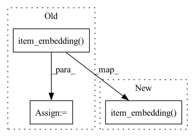

Pattern ID :5684

Before Change
// get enmbeddigs
user_emb = self.user_embedding(users)
pos_item_emb = self.item_embedding(pos_items)
neg_item_emb = self.item_embedding(neg_items)
// compute distance dist = torch.cdist(u_emb, i_emb)
return user_emb, pos_item_emb, neg_item_emb
After Change
embeddings_dict = {
"user_embedding": self.user_embedding(users),
"pos_item_embedding": self.item_embedding(pos_items),
"neg_item_embedding": self.item_embedding(neg_items),
}
return embeddings_dict
In pattern: SUPERPATTERN
Frequency: 4
Non-data size: 3
Instances
Fragment ID: 19984689
Project Name: hand10ryo/pytorchcml
Commit Name: 2e727d36c816a5309fc72d7d30f00855a0763c63
Time: 2021-05-14
Author: hand10ryo@yahoo.co.jp
File Name: src/PytorchCML/models/CollaborativeMetricLearning.py
M Class Name: CollaborativeMetricLearning
N Class Name: CollaborativeMetricLearning
M Method Name: forward(4)
N Method Name: forward(4)
M Parent Class: BaseEmbeddingModel
N Parent Class: BaseEmbeddingModel
M File Name: src/PytorchCML/models/CollaborativeMetricLearning.py
N File Name: src/PytorchCML/models/CollaborativeMetricLearning.py
M Start Line: 23
M End Line: 29
N Start Line: 21
N End Line: 27
'>
Before Change
loss = self.kg_weight * (kg_loss + orthogonal_loss + reg_loss)
entity = torch.cat([h, pos_t, neg_t])
entity = entity[entity < self.n_items]
align_loss = alignLoss(self.item_embedding(entity), self.entity_embedding(entity))
loss += self.align_weight * align_loss
return loss
After Change
loss = self.kg_weight * (kg_loss + orthogonal_loss + reg_loss)
entity = torch.cat([h, pos_t, neg_t])
entity = entity[entity < self.n_items]
align_loss = self.align_weight * alignLoss(self.item_embedding(entity), self.entity_embedding(entity), self.L1_flag)
return loss, align_loss
'>
Fragment ID: 19984690
Project Name: rucaibox/recbole
Commit Name: 10f055e6e22f7d9bf686a366ea2b0d3ebc81a804
Time: 2020-09-26
Author: 2015201909@ruc.edu.cn
File Name: recbox/model/knowledge_aware_recommender/ktup.py
M Class Name: KTUP
N Class Name: KTUP
M Method Name: calculate_kg_loss(2)
N Method Name: calculate_kg_loss(2)
M Parent Class: KnowledgeRecommender
N Parent Class: KnowledgeRecommender
M File Name: recbox/model/knowledge_aware_recommender/ktup.py
N File Name: recbox/model/knowledge_aware_recommender/ktup.py
M Start Line: 165
M End Line: 181
N Start Line: 166
N End Line: 192
'>
Before Change
// get enmbeddigs
u_emb = self.user_embedding(users) // batch_size × dim
ip_emb = self.item_embedding(pos_items) // batch_size × dim
in_emb = self.item_embedding(neg_items) // batch_size × n_samples × dim
// get bias
After Change
// get enmbeddigs
embeddings_dict = {
"user_embedding": self.user_embedding(users),
"pos_item_embedding": self.item_embedding(pos_items),
"neg_item_embedding": self.item_embedding(neg_items),
"user_bias": self.user_bias(users),
"pos_item_bias": self.item_bias(pos_items),
'>
Fragment ID: 19984691
Project Name: hand10ryo/pytorchcml
Commit Name: 2e727d36c816a5309fc72d7d30f00855a0763c63
Time: 2021-05-14
Author: hand10ryo@yahoo.co.jp
File Name: src/PytorchCML/models/MatrixFactorization.py
M Class Name: LogitMatrixFactorization
N Class Name: LogitMatrixFactorization
M Method Name: forward(4)
N Method Name: forward(4)
M Parent Class: BaseEmbeddingModel
N Parent Class: BaseEmbeddingModel
M File Name: src/PytorchCML/models/MatrixFactorization.py
N File Name: src/PytorchCML/models/MatrixFactorization.py
M Start Line: 77
M End Line: 89
N Start Line: 75
N End Line: 84
'>
Before Change
orthogonal_loss = orthogonalLoss(self.pref_embedding.weight, self.pref_norm_embedding.weight)
loss = rec_loss + orthogonal_loss
item = torch.cat([pos_item, neg_item])
align_loss = alignLoss(self.item_embedding(item), self.entity_embedding(item))
loss += self.align_weight * align_loss
return loss
After Change
rec_loss = self.rec_loss(pos_item_score, neg_item_score)
orthogonal_loss = orthogonalLoss(self.pref_embedding.weight, self.pref_norm_embedding.weight)
item = torch.cat([pos_item, neg_item])
align_loss = self.align_weight * alignLoss(self.item_embedding(item), self.entity_embedding(item), self.L1_flag)
return rec_loss, orthogonal_loss, align_loss
'>
Fragment ID: 19984694
Project Name: rucaibox/recbole
Commit Name: 10f055e6e22f7d9bf686a366ea2b0d3ebc81a804
Time: 2020-09-26
Author: 2015201909@ruc.edu.cn
File Name: recbox/model/knowledge_aware_recommender/ktup.py
M Class Name: KTUP
N Class Name: KTUP
M Method Name: calculate_loss(2)
N Method Name: calculate_loss(2)
M Parent Class: KnowledgeRecommender
N Parent Class: KnowledgeRecommender
M File Name: recbox/model/knowledge_aware_recommender/ktup.py
N File Name: recbox/model/knowledge_aware_recommender/ktup.py
M Start Line: 141
M End Line: 154
N Start Line: 152
N End Line: 163